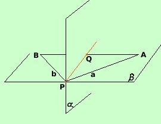

Relazione fra piani nello spazio;
un primo teorema
Intanto diciamo che:
Se un piano contiene due punti allora contiene tutti i punti della retta
passante per i due punti
Due piani nello spazio possono essere:
- Paralleli: in tal caso non avranno nessun punto in
comune
- Secanti cioe' si tagliano fra loro
Possiamo enunciare, a tale proposito, un primo teorema:
Se due piani hanno in comune un punto allora hanno in comune tutti i punti di
una retta
Per dimostrarlo sara' sufficiente far vedere che i due piani hanno in comune un
altro punto, per il postulato del piano sopra ricordato seguira' la tesi.
Ipotesi
P   e
P
e
P 
|
Tesi
Esiste Q  P
tale che P
tale che
Q
e
Q
|

Dal punto P sul piano  traccio le semirette a e
b da parti opposte rispetto al piano traccio le semirette a e
b da parti opposte rispetto al piano  , Sulla semiretta a scelgo
un punto A e sulla semiretta b un punto B (con A e
B diversi da P); il segmento AB sara' contenuto nel piano
ed essendo A e B in
semispazi opposti rispetto ad , per il postulato dello spazio,
tale segmento tagliera' il piano in un punto Q; tale punto
Q apparterra' anche al piano perche' e' un punto del segmento
AB contenuto nel piano , come volevamo dimostrare. , Sulla semiretta a scelgo
un punto A e sulla semiretta b un punto B (con A e
B diversi da P); il segmento AB sara' contenuto nel piano
ed essendo A e B in
semispazi opposti rispetto ad , per il postulato dello spazio,
tale segmento tagliera' il piano in un punto Q; tale punto
Q apparterra' anche al piano perche' e' un punto del segmento
AB contenuto nel piano , come volevamo dimostrare.
|